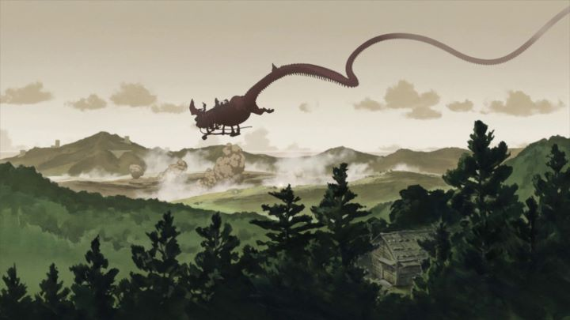

The two-episode television special "The Dragon Dentist" has a strange history. It originally started as the debut 8-minute short film opening the "Animator Expo" in 2014, a special online-only free-to-view year-long animation festival featuring dozens of short films by some of the most talented talent of the anime industry. That online initiative was organized by anime director Hideaki Anno, best known for the cult hit "Neon Genesis Evangelion," and whom at the time was working on the fourth and final film in the Evangelion rebuild film series. He was SUPPOSED to be working on that film, following the third that came in 2012, but after numerous delays and projects (including this online festival), the film still has no sign of release as of 2017, much to the annoyance of fans waiting for the resolution decades in the making. Anyway, Studio Khara (the company behind the rebuild of Evangelion films) didn't have much else to do, so that festival was a chance for their animators to practice and train while waiting for real work. "The Dragon Dentist" was one of their few works outside of the Evangelion films, and as I recall, it was a wholly-original and self-contained film that could lend itself well to a fully expanded series or film. At least, I remember that being the case, which is difficult since the short films have since been removed, the festival contents never released on home video, and the home video release of this two-episode followup not including the original inspiration. Darn. I suppose the 45-minute episodes (making up roughly the length of a feature film) don't rely on that short film all that much, and in fact rewrite parts of it that it would be confusing to have both on hand. Unfortunately, "The Dragon Dentist" OVA is a weak story despite its original setting. It takes place at a time of war on Earth, during which time a large dragon flies through the skies as a diety that protects the Earth from violence and acts as a guardian to those who pass to the afterlife. When souls die, they pass through the dragon's teeth as beacons to the next world. Sometimes, souls come out of the teeth and into the dragon's mouth, at which point they are assigned the task of "Dragon Dentist," joining a group of dedicated workers who clean the teeth from malicious mushi monsters that look suspiciously like the plaque and gingivitus in those dentist panphlets I got as a kid. So the whole thing comes across as a big commercial to get students excited about dentistry. There is a story and climax when warring factions on Earth scheme to obtain a dragon's tooth and its related power, and some fascinating lore in the background, but it feels like a mess of things where each part isn't strong enough to hold up the story on its own, and the sum isn't necessarily greater than its parts. Some character motivations and logic seem odd, and most of said characters are unusually one-dimensional. The saving grace of the production is the originality and novelty of the whole thing, and in the art that follows. The art production itself is a mixed bag. Some parts are straightforward and downright basic, and when the animation relies on 3D models for characters, it can look subpar. But in other parts, the talent at Studio Khara comes through, such as the design of the dragon itself, or the opening scenes of the dentists waking in the morning atop the dragon in the sky. The tooth monsters are well-designed and animated, an example of 3D animation being put to good use in a 2D anime. But that's not all to the visuals. For a small part of the first episode, and for a much larger part of the second, we get a glimpse of surreal animation representing no less than the apocolypse, and it stands as one of the most memorizing and exhilerating things I've ever seen. Perhaps it is no coincidence, since these are the people behind the Evangelion films, which themselves are all about monsters and the end of the world as artistically portrayed through the mind of a teenager. It's a shame the rest of the production is such a mix on all levels... if everything matched these points of highlight, I'd be giving a full 5/5 easy. For now, I can hope that this was a useful practice session for Studio Khara in their preparation for Evangelion 4.0. Otherwise, I recommend this to anyone who wants something wholly original, someone who wants to see the best examples of animation no matter how short, or someone who really likes dental hygiene. Anyone else may be left wanting. For the curious, there does exist other edits of these OVA, in total including a feature-length cut and a director's cut and a broadcast cut. I can't tell you which I watched, but perhaps another version will be an improvement worth your time.
- "Ani" More reviews can be found at : https://2danicritic.github.io/ Previous review: review_The_Disappearance_of_Nagato_Yuki-chan Next review: review_The_Emperor's_New_Groove